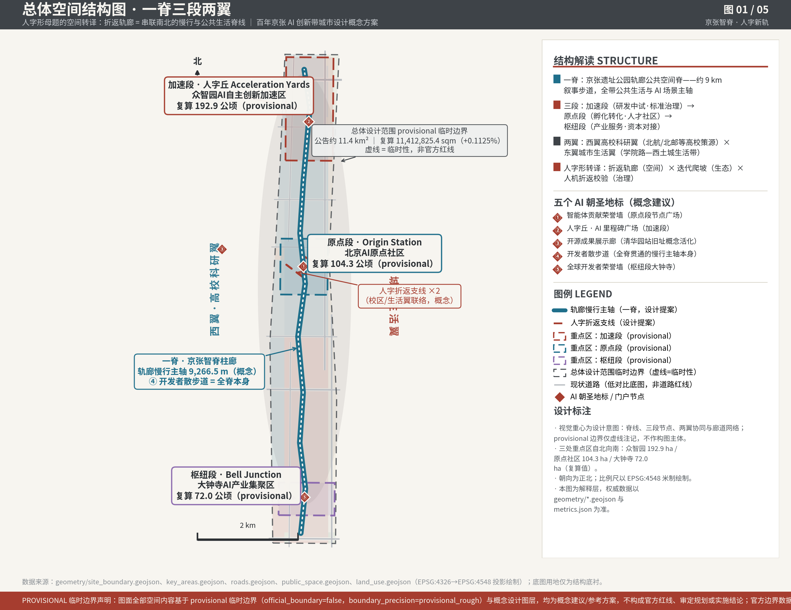
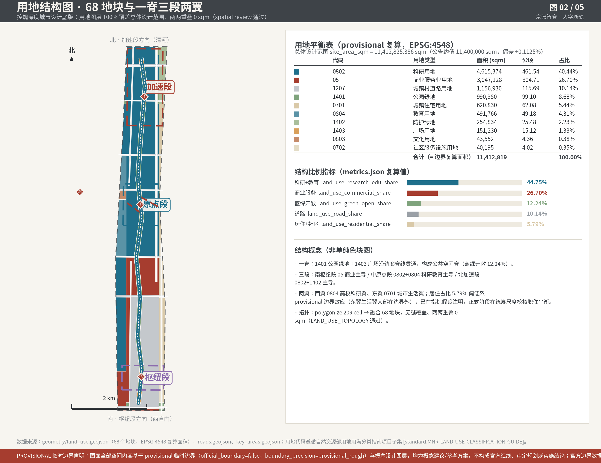
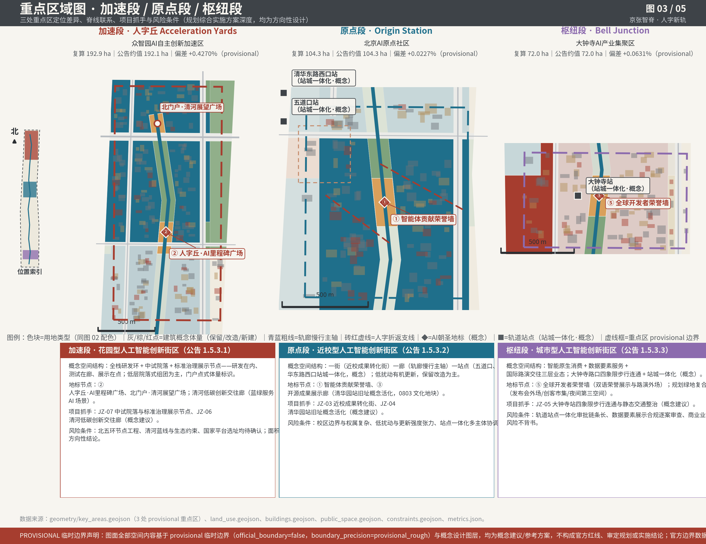
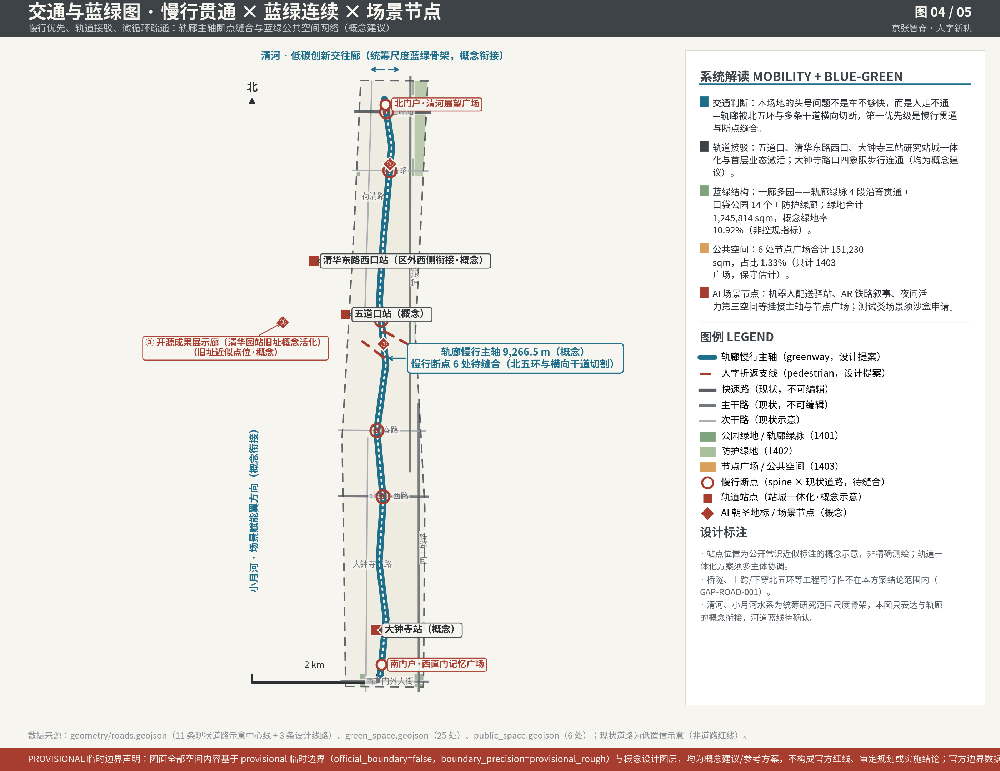
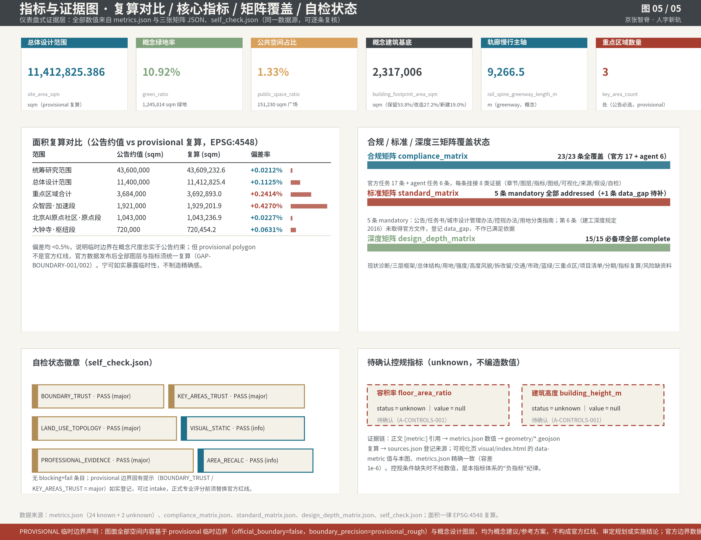

下列数值均由 geometry/*.geojson 在 EPSG:4548 下程序化复算，与正文 [metric:] 引用、metrics-evidence 图版同出一源；容积率、建筑高度属待确认控规条件（status=unknown），本页不给数值。
三层范围（统筹研究 43.6 km² / 总体设计 11.4 km² / 重点区 3 处）全部 provisional 边界 EPSG:4548 复算，偏差均 <0.5%，登记 GAP-BOUNDARY-001/002。
68 地块用地图层无缝覆盖、两两重叠 0 sqm；一脊三段两翼结构 + 用地平衡表；用地代码遵循自然资源部分类指南项目子集。
轨廊慢行主轴 9,266.5 m + 人字折返支线 ×2；6 处慢行断点待缝合；三处轨道站点站城一体化（概念）；一廊多园蓝绿网络。
加速段/原点段/枢纽段三处重点区概念空间结构、5 处 AI 朝圣地标、7 项更新项目概念清单（JZ-01…JZ-07）与拆改留策略。
metrics.json 24 known + 2 unknown；正文引用、图版、本页 data-metric 三方精确一致；unknown 指标不编造，"负指标"纪律。
5 张演示级图版（本页下方）、A3 小册子与 A0 展板 PDF、离线静态可视化页，均由同一数据源程序化生成，可复现。
三层范围框架：战略统筹层（43.6 km² 清河—小月河蓝绿骨架与区域廊道，仅作衔接判断）→ 概念设计层（11.4 km² 总体设计范围，本方案主体）→ 重点设计层（3 处公告必选重点区）。五张图版覆盖：总体空间结构、用地分区、重点区域、交通慢行与蓝绿公共空间、指标与证据；建筑概念体量（保留/改造/新建）在重点区图版中以拆改留策略表达，更新项目概念清单（JZ-01…JZ-07）挂接三段空间。





约 9.3 km 叙事步道串起三段：晨跑通勤、开源里程碑地刻、AR 铁路叙事点位沿脊布置，是全带公共生活与 AI 场景的主轴。
依托 0803 文化地块与站房旧址，做开源模型/数据集里程碑的常设展示与发布外场，历史记忆 × 当代开源文化。
机器人配送、巡检等中试场景挂接轨廊与院落组团；测试类场景一律走沙盒申请与逐案评估，不预设合规结论。
双语荣誉展示 + 路演外场 + 夜间活力第三空间，复合利用规划绿地（发布会外场/创客市集），服务国际交往定位。
轨廊慢行主轴贯通与 6 处断点缝合、南北门户节点、原点段低扰动更新启动；以"走得通"建立公共信任。
三处重点区项目抓手落地：成果转化街、清华园站旧址活化、中试院落、大钟寺四象限步行连通；地标与 AI 场景成网。
两翼协同与统筹层廊道衔接（清河/小月河骨架）、业态与运营滚动校准；待官方边界与控规条件发布后统一复算并校核。
| 类型 | 内容 |
|---|---|
| 来源（公开/登记层） | SITE-PACKAGE（公告与站点包，official_public）；SOURCE-REGISTRY（来源可用性登记：formal-ready / background-only / provisional-only）；PROCESSED-FACT-PACK（agent 可读导航层，非权威来源）。 |
| 来源（推断层） | BOUNDARY-SOURCE / KEY-AREA-SOURCE：provisional_boundaries.geojson，依据公告文字四至与面积约值推断（provisional-only），禁止作为官方红线、法定控规、精确面积或审批依据。 |
| 假设 A-CONTROLS-001 | 控规条件、道路红线、土地权属、市政与工程约束须以官方附件为准；容积率、建筑高度、拆改留、道路线位一律写为待确认。 |
| 假设 GAP-BOUNDARY-001/002 | 总体设计范围、三处重点区与统筹研究范围边界均为 provisional_rough；官方 polygon 发布后全部图层与指标统一重算。 |
| 假设 GAP-ROAD-001 | 现状道路为低置信示意中心线（confidence=low），非道路红线；桥隧与上跨/下穿北五环工程可行性不在结论范围内。 |
徽章位说明：本区与图 05 指标证据图同源；如后续阶段重跑 self_check，徽章状态以 self_check.json 为准。